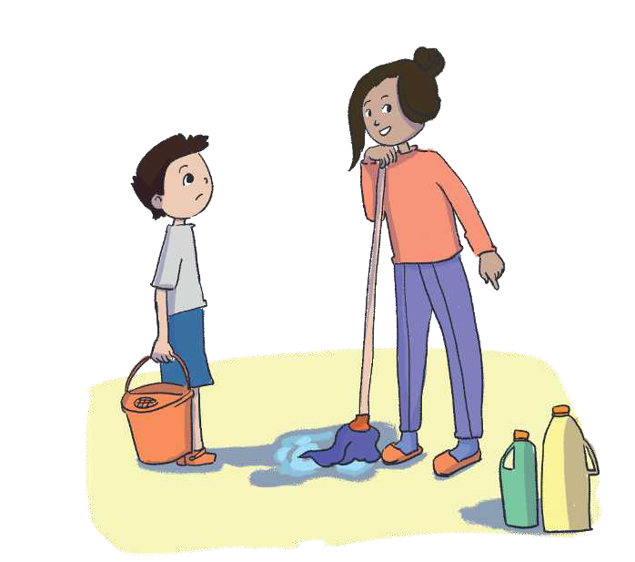
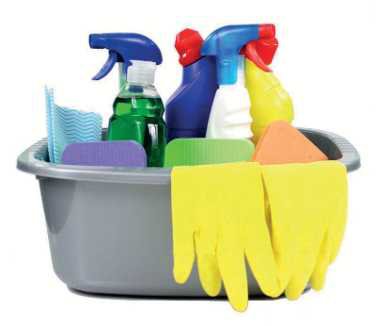

TEMATIKA 4: NJOHJA E RREZIQEVE
2.DIELLI PASTRON SHTËPINË

Nëna e Diellit po pastronte shtëpinë. Dielli e pa dhe filloi ta ndihmonte nënën. Ajo e porositi të ketë kujdes nga lëngjet e rrezikshme, duke i treguar me gisht detergentet për pastrim, që përmbajnë kimikate.
